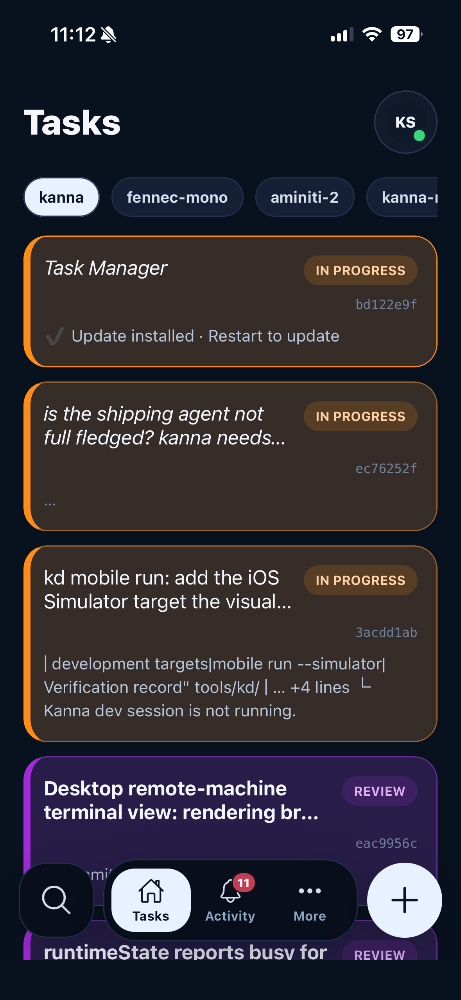
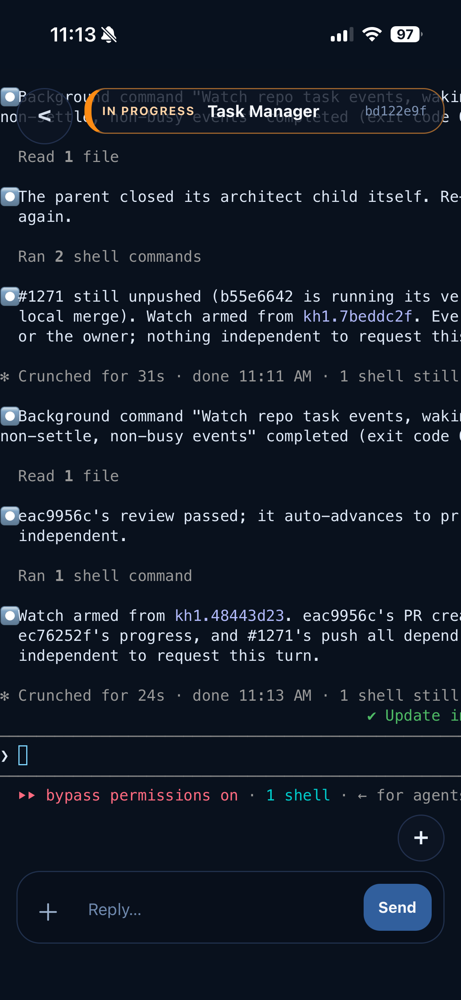

macOS & iOS · structured workflows for agent CLIs
KANNA
Build with Opus. Review with Codex. Have Fable manage it all and ping your phone when it needs something.
Requires macOS 15 or later

// WHAT IT DOES
-
Composed workflows
Name the stages your work actually goes through, give each stage an agent, and decide where Kanna advances on its own and where it stops for you. The workflow is a file in the repository, so it is reviewed and versioned like the rest of the code.
-
Isolated workspaces
Each task gets its own git worktree and its own ports. Kanna puts the port values in the environment and runs your startup and teardown scripts, so several workspaces can each run a web app, a mobile app, a Firebase emulator and whatever else the stack needs, side by side.
-
Coordinators
Long-running task-manager and merge roles coordinate repository work. A review dispatcher sends one change to the applicable specialists in parallel, then reconciles their verdicts.
-
Any agent, any stage
A stage is something you compose, not a slot you fill: it carries its own agent, its own prompt, its own follow-up action, and its own rule for whether Kanna advances or waits. Build with one agent and review with another — Claude Code, Codex, GitHub Copilot CLI, OpenCode, or Antigravity.
-
Paired machines
Pair another Mac and push a task to it, or pull one back.
-
Away from the desk
An agent notifies you when it finishes or needs a decision, and tapping the notification opens that task. From your phone you can talk to a running agent in a live terminal, browse its files and diffs, open the task’s own dev server in a preview, and advance a stage.
// KANNA MOBILE



Kanna aims to be free where it can be, and low cost where cloud infrastructure is unavoidable. Notifications are free anywhere, on your own network or away from it. The agent terminal is free over your LAN; reaching it from outside runs through the cloud relay, and that is the $5/month — free for beta testers.